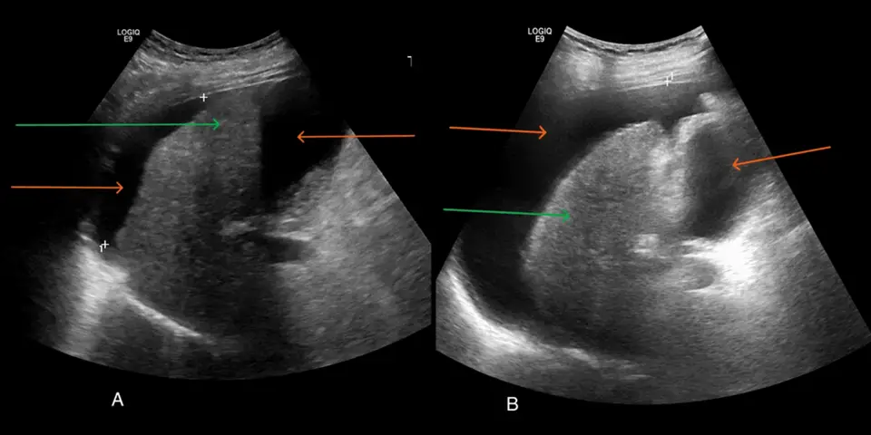

1. Définition
La cirrhoseElle représente le stade avancé de toute maladie chronique du foie, avec fibrose cicatricielle diffuse et nodules de régénération. Elle détruit l'architecture hépatique et élève la pression portale. Elle est le plus souvent irréversible, mais un traitement de la cause peut la stabiliser2. hépatique est une fibrose diffuse du foie avec nodules de régénération. Elle abaisse la synthèse d'albumine et élève la pression portale. Le consensus de Baveno VII définit la décompensationApparition d'une ascite, d'une hémorragie variqueuse ou d'une encéphalopathie hépatique manifeste de grade II ou plus. Le passage à ce stade aggrave nettement le pronostic. par ces trois événements.
2. Épidémiologie (Suisse, puis Europe)
En Suisse, l'hépatite B chronique touchait 0,53 % de la population (environ 44 000 personnes) en 2015 (OFSP)4. L'hépatopathie stéatosique progresse (modèle suisse)5, car l'alcool, les hépatites B et C, l'obésité et le diabète causent et aggravent, même traités, la cirrhose de l'adulte d'âge moyen2,5. Or la décompensation aggrave le pronostic, que l'albumine améliore (essai ANSWER)3 ; d'où dépister les hépatites virales et de la fibrose. Le tableau épidémiologique précise les effectifs et les projections suisses.
3. Physiopathologie
3.1 Amorce (niveau moléculaire et cellulaire)
Une agression chronique détruit les hépatocytes : l'alcool, les virus B ou C et la stéatose métabolique en sont les causes. Les cellules étoilées s'activent et déposent du collagène. Le traitement de la cause réduit la pression portale et le risque de décompensation2.
3.2 Développement (niveau tissulaire)
La fibrose et les nodules rigidifient le foie et rétrécissent les sinusoïdes. La résistance intrahépatique augmente, donc la pression portale augmente. Le seuil d'hypertension portale cliniquement significativeGradient de pression veineuse hépatique d'au moins 10 mmHg2. Il prédit les varices et la décompensation. Le gradient est le gold standard de la pression portale. est un gradient de pression veineuse hépatique (HVPG) d'au moins 10 mmHg2.
3.3 Installation (de la lésion au signe clinique)
- La pression portale élevée provoque une dilatation des vaisseaux splanchniques par production de monoxyde d'azote.
- Le volume sanguin « efficace » baisse, la tension artérielle moyenne baisse.
- Le système rénine-angiotensine-aldostérone, le système sympathique et l'hormone antidiurétique s'activent.
- Le rein retient sodium et eau ; le liquide gagne la cavité péritonéale par hausse de la pression sinusoïdale et du débit lymphatique hépatique.
3.4 Maintien et signes
L'œdème de la cirrhose naît de la baisse d'albumine et de l'hypertension portale ; il touche d'abord l'abdomen, où il forme l'ascite, puis les jambes. Le terme « œdème » correspond au godet des jambes, et le terme « ascite » correspond au liquide intrapéritonéal. Le foie synthétise moins d'albumine ; la pression oncotique baisse et le liquide fuit vers les tissus. L'ascite tendue comprime la veine cave inférieure, ce qui majore l'œdème des jambes. La rétention d'eau dépasse celle du sodium : la natrémie baisse. L'hypoalbuminémie signe la gravité de la cirrhose, mais elle seule n'explique pas l'ascite.
3.5 Complications et pronostic
- La translocation bactérienne intestinale provoque l'infection de l'ascite, qui devient une péritonite bactérienne spontanée.
- La vasodilatation splanchnique extrême réduit la perfusion rénale : syndrome hépato-rénal.
- Les varices œsophagiennes saignent par hausse de la pression portale.
- L'ammoniac non épuré atteint le cerveau : encéphalopathie hépatique.
3.6 Corrélation : lésion, exploration, thérapeutique
Le tableau de corrélation relie chaque perturbation à l'examen qui la montre et au médicament qui la corrige, avec son mécanisme.
4. Démarche diagnostique
On exclut d'abord les urgences vitales de la cirrhose. On cherche ensuite la cause de l'œdème, puis on confirme la cirrhose. Un œdème des jambes sans ascite évoque d'abord une autre cause (veineuse, cardiaque, rénale, médicamenteuse).
4.1 Drapeaux rouges
Le médecin exclut d'abord cinq drapeaux rouges : hémorragie variqueuse, péritonite bactérienne spontanée, syndrome hépato-rénal, encéphalopathie hépatique et hydrothorax hépatique.
4.2 Étapes jusqu'au diagnostic, sans urgence ni drapeau rouge
- Le médecin décrit l'œdème : godet, bilatéralité et ascite associée (point 6).
- Il recherche les stigmates d'hépatopathie : ictère, angiomes stellaires, splénomégalie et circulation collatérale.
- Il dose le bilan hépatique, albumine, INR, plaquettes, créatinine et sodium.
- Il mesure la rigidité du foie par élastométrie : moins de 10 kPa exclut la cirrhose compensée, plus de 15 kPa la rend très probable2.
- Il ponctionne toute ascite nouvelle et calcule le gradient albumine sérum-ascite2,6.
- Il recherche la cause : alcool, hépatites B et C, stéatose métabolique.
4.3 Diagnostics différentiels discriminants
Quatre diagnostics dangereux imitent l'ascite cirrhotique : l'insuffisance cardiaque droite, le syndrome néphrotique, la carcinose péritonéale et la thrombose portale ou le syndrome de Budd-Chiari. La fenêtre des diagnostics discriminants donne l'examen qui tranche chacun.
5. Anamnèse ciblée et drapeaux rouges
5.1 Symptôme d'appel et questions clés
Le symptôme d'appel est un ventre qui gonfle, puis des jambes qui enflent ; le médecin en précise le siège, l'évolution, les facteurs aggravants et les signes associés. Les questions clés cherchent ensuite l'alcool, les hépatites virales, le syndrome métabolique, les médicaments et les signes de décompensation.
5.2 Drapeaux rouges actionnables
Une hématémèse, un méléna, une fièvre avec ascite, une confusion, une oligurie ou une dyspnée de repos imposent un geste immédiat, que la fenêtre des drapeaux actionnables précise.
6. Examen physique ciblé, région par région
L'examen cherche l'ascite, l'œdème, les stigmates d'hépatopathie et les complications ; pour chaque région, le normal précède le pathologique. Le médecin suit l'ordre topo-systémique : il commence par l'état général, puis il inspecte la peau et les yeux. Il examine ensuite l'abdomen, le thorax et le cœur, et enfin les membres inférieurs. Pour le cirrhotique, chaque fenêtre décrit le signe recherché, son geste, son aspect normal et pathologique, puis son piège.
7. Approche syndromique
7.1 Syndrome d'hypertension portale
Le syndrome d'hypertension portale réunit hémorragie digestive, splénomégalie et circulation collatérale, car le sang porte contourne un foie rigide. La fenêtre de ce syndrome détaille chaque signe.
7.2 Syndrome d'insuffisance hépatocellulaire
Le syndrome d'insuffisance hépatocellulaire réunit ictère, angiomes stellaires et troubles de la coagulation, car le foie synthétise et épure moins. Ses signes se recherchent selon la fenêtre du syndrome.
7.3 Syndrome d'ascite
Le syndrome d'ascite associe distension abdominale, matité déclive et prise de poids, car le rein retient le sodium et l'eau. La fenêtre des signes de l'ascite précise leur recherche.
7.4 Syndrome œdémateux
Le syndrome œdémateux associe un godet bilatéral des jambes à l'ascite, car l'albumine baisse et l'ascite comprime la veine cave inférieure. Le geste de chaque signe figure dans la fenêtre de l'œdème.
7.5 Syndrome d'encéphalopathie hépatique
Le syndrome d'encéphalopathie hépatique associe confusion, somnolence et astérixis, car l'ammoniac non épuré atteint le cerveau. Les grades et les signes figurent dans la fenêtre de l'encéphalopathie.
8. Diagnostic positif et critères
Selon Baveno VII (2022) et l'EASL (2018), le diagnostic de cirrhose repose sur un faisceau : cause, clinique, biologie, élastométrie et imagerie2. Une élastométrie de 10 à 15 kPa est suggestive de cirrhose compensée, plus de 15 kPa fortement suggestive2. Une biopsie hépatique confirme l'architecture cirrhotique si le doute persiste. Baveno VII emploie le terme d'hépatopathie chronique avancée compensée (cACLD), qui repose sur des tests non invasifs. Ce terme coexiste avec celui de cirrhose compensée, mais les deux ne sont pas interchangeables2.
8.1 Critères et stades
| Examen ou situation évalués | Critère diagnostique | Usage clinique |
|---|---|---|
| ÉlastométrieMesure de la rigidité du foie en kilopascals. Elle doit se faire à jeun, car la prise de repas augmente la valeur. | moins de 10 kPa : exclut ; 10 à 15 : suggère ; plus de 15 : très probable2 | Orienter vers l'hépatologue ; répéter une valeur de 10 kPa ou plus à jeun2. |
| Hypertension portale cliniquement significativeGradient de pression veineuse hépatique d'au moins 10 mmHg2. | élastométrie ≤ 15 kPa et plaquettes ≥ 150 G/L l'excluent ; ≥ 25 kPa l'affirment (virale ou alcoolique)2 | Décider d'un bêtabloquant et d'une endoscopie. |
| Décompensation | ascite, hémorragie variqueuse, encéphalopathie de grade II ou plus | Stade pronostique : envisager la transplantation. |
8.2 Classification de Child-Pugh (1973)
La grille de Child-Pugh comprend cinq paramètres : bilirubine, albumine, INR, ascite et encéphalopathie.
Le total classe en A (5 à 6), B (7 à 9) ou C (10 à 15)8. Le score MELD associe bilirubine, INR et créatinine pour prioriser la transplantation9. Le MELD 3.0 est la version actualisée89.
Ne suffit pas : un godet bilatéral ou une albumine basse ne prouve pas la cirrhose. Seuls le faisceau cause, élastométrie et imagerie ou la biopsie posent le diagnostic.
9. Examens complémentaires
9.a Gold standard
La biopsie hépatique confirme la cirrhose ; le gradient de pression veineuse hépatique mesure l'hypertension portale et en est le gold standard2. Ces examens invasifs se réservent aux centres de référence.
9.b Première intention
Le médecin mesure d'abord la rigidité du foie par l'élastométrie transitoire. Il ponctionne toute ascite nouvelle : la ponction d'ascite cherche l'infection et l'hypertension portale. Le bilan biologique mesure la fonction hépatique, et l'échographie abdominale montre le foie, la rate, la veine porte et l'ascite ; sa fenêtre présente une ascite interprétée.
9.c Alternatives
| Situation | Alternative | Remarque |
|---|---|---|
| Obésité ou ascite qui fausse l'élastométrie | Élastographie par IRM | À discuter avec le radiologue. |
| Grossesse | Échographie, élastométrie | Éviter le scanner sans nécessité. |
| Débit de filtration glomérulaire inférieur à 30 mL/min6 | Échographie, IRM sans gadolinium si possible | Le gadolinium expose au risque de fibrose systémique néphrogénique. |
| Allergie aux produits iodés | IRM | Éviter le scanner avec contraste. |
| Dispositif non compatible avec l'IRM | Scanner ou échographie | Selon l'indication. |
9.d Deuxième intention
L'endoscopie digestive haute dépiste les varices. La biopsie hépatique tranche une cause incertaine. Le scanner ou l'IRM avec contraste recherche un carcinome ou une thrombose portale. Le gradient de pression veineuse hépatique mesure l'hypertension portale en centre de référence.
10. Arbre décisionnel
L'arbre commence par les urgences, puis cherche la cause de l'œdème.
- Y a-t-il une urgence ?
- Si le patient présente une hématémèse ou un méléna → le médecin réanime, donne la terlipressine et un antibiotique, puis demande l'endoscopie dans les 12 heures2.
- Si une fièvre, une douleur abdominale ou une ascite nouvelle apparaissent → le médecin ponctionne l'ascite ; si les polynucléaires neutrophiles atteignent 250/mm³, il donne un antibiotique et l'albumine1.
- Si la créatinine augmente → le médecin arrête les diurétiques, perfuse l'albumine et recherche un syndrome hépato-rénal7.
- Si le patient devient confus → le médecin recherche le déclencheur et donne le lactulose.
- L'œdème est-il bilatéral avec ascite ?
- Si les stigmates d'hépatopathie s'associent à une élastométrie élevée → la cirrhose devient probable et impose le bilan complet.
- Si jugulaires turgescentes ou NT-proBNP élevé → le médecin recherche une insuffisance cardiaque.
- Si la protéinurie est importante → le médecin recherche un syndrome néphrotique.
- La cirrhose est-elle confirmée ?
- Si oui → classer Child-Pugh et MELD, chercher la cause, dépister varices et carcinome hépatocellulaire, traiter l'ascite.
- Si non → chercher une autre cause d'œdème.
11. Prise en charge selon les recommandations suisses
11.A But thérapeutique
- Le traitement élimine l'ascite et l'œdème sans dépasser une perte de poids de 0,5 kg par jour sans œdème périphérique, ni de 1 kg par jour avec œdème1.
- Il maintient le sodium sérique au-dessus de 125 mmol/L et la créatinine stable1.
- Il prévient la première décompensation et les récidives de saignement, d'infection et d'encéphalopathie2.
- Il traite la cause : abstinence, antiviraux, correction métabolique.
11.B Moyens
Urgences
Urgence — conduite chronologique : hémorragie variqueuse
- Le médecin réanime : il pose les voies veineuses et transfuse prudemment, avec une hémoglobine cible de 7 à 8 g/dL2.
- Il donne un vasoactif dès que possible, pendant 2 à 5 jours : la terlipressine2.
- Il donne un antibiotique dès l'admission. Baveno VII retient la ceftriaxone à 1 g par 24 heures2 ; l'AIPS de Rocephin® autorise 1 à 2 g par jour en une injection19.
- Il demande l'endoscopie dans les 12 heures après la réanimation, avec ligature2.
- Il pose une dérivation porto-systémique intrahépatique (TIPS) préemptive dans les 72 heures, idéalement dans les 24 heures2. Elle s'adresse au patient Child-Pugh C de 10 à 13 points, ou Child-Pugh B au-delà de 7 points avec saignement actif2. Sinon, le médecin la réserve à l'échec du traitement endoscopique et vasoactif2.
Urgence — conduite chronologique : péritonite bactérienne spontanée
- Le médecin ponctionne l'ascite et fait les hémocultures avant l'antibiotique, qui suit sans délai.
- Il donne la ceftriaxone à 1 à 2 g par jour, selon l'AIPS de Rocephin®19.
- Il perfuse l'albumine : l'EASL donne 1,5 g/kg au diagnostic puis 1 g/kg au troisième jour1 ; l'AIPS d'Albunorm® laisse la dose individuelle, guidée par le volume circulant15.
- Il contrôle la créatinine à 48 heures ; la prophylaxie secondaire suit l'épisode12.
Urgence — conduite chronologique : syndrome hépato-rénal et insuffisance rénale aiguë
- Le médecin suspend les diurétiques, puis il évite les AINS et les vasodilatateurs7.
- Il perfuse l'albumine pour exclure l'hypovolémie : l'EASL donne 1 g/kg, au plus 100 g, pendant deux jours consécutifs17 ; l'AIPS d'Albunorm® laisse la dose individuelle15.
- Si le syndrome hépato-rénal persiste, il ajoute la terlipressine avec l'albumine2,10.
- Il demande l'avis hépatologique, qui évalue la transplantation ; l'AIPS de Glypressine® ne retient que les varices œsophagiennes hémorragiques comme indication16.
Urgence — conduite chronologique : encéphalopathie hépatique
- Le médecin recherche et traite le déclencheur : infection, hémorragie, hypokaliémie, constipation, sédatifs1.
- Il donne le lactulose à 30 à 50 mL trois fois par jour jusqu'à 2 à 3 selles molles20.
- Il protège les voies aériennes en cas de grade avancé. Il poursuit le lactulose en prévention secondaire et ajoute, dès le deuxième épisode, la rifaximine22021.
Hors urgence : ordre du traitement de l'ascite
- Mesures générales : le patient s'abstient d'alcool et restreint modérément le sodium à 80 à 120 mmol par jour, soit 4,6 à 6,9 g de sel, avec un apport protéique normal1,2. La restriction hydrique reste réservée à l'hyponatrémie sévère.
- Pharmacologique : la spironolactone constitue la première intention et le furosémide s'y associe ; la spironolactone seule suffit à la première ascite.
- Ponction évacuatrice : une ascite abondante impose la ponction ; l'EASL donne 8 g d'albumine par litre ôté au-delà de 5 litres1, et l'AIPS d'Albunorm® laisse la dose individuelle15.
- Dérivation porto-systémique (TIPS) : elle se discute si trois ponctions évacuatrices ou plus en un an2.
- Transplantation hépatique : elle se discute dès la décompensation.
11.B bis Médicaments : fiche synthétique
Les doses suivantes sont celles de l'AIPS. La spironolactone se donne à 100 mg par jour si le quotient urinaire Na/K dépasse 1, et à 200 à 400 mg par jour s'il est inférieur à 112. Le furosémide se donne par voie orale, de ½ à 2 comprimés de 40 mg par jour au début, puis ½ à 1 comprimé en entretien13. La voie intraveineuse se réserve aux troubles d'absorption ou à l'effet rapide, avec un relais oral au plus tôt14. La ceftriaxone se donne à 1 à 2 g par jour19. Le traitement prévoit aussi le lactulose à 30 à 50 mL trois fois par jour20 et la rifaximine à 550 mg deux fois par jour21.
| Spécialité ® (clic = fenêtre complète) | Contre-indications et effets indésirables à dire au patient | Interactions et surveillance |
|---|---|---|
| Aldactone® | L'AIPS contre-indique la spironolactone en cas de défaillance rénale aiguë, d'insuffisance rénale sévère (clairance < 30 mL/min), d'anurie et de maladie d'Addison12. Elle la contre-indique aussi en cas d'hyperkaliémie, d'hyponatrémie, d'association à l'éplérénone et d'hypersensibilité12. Effets : gynécomastie, hyperkaliémie. | Éviter les IEC, les AINS et le potassium. Contrôler potassium et créatinine. |
| Lasix® | L'AIPS contre-indique le furosémide en cas d'anurie, de coma ou de précoma hépatique, d'hypokaliémie ou d'hyponatrémie sévère, d'hypovolémie ou de déshydratation13. Elle le contre-indique aussi en cas d'hypersensibilité au furosémide ou aux sulfamides, et pendant l'allaitement13. Effets : crampes, troubles ioniques. | Dosage le plus faible possible ; ionogramme. |
| Albunorm® | Surcharge volémique : prudence en cas d'insuffisance cardiaque décompensée. | Surveiller pression artérielle, diurèse, hématocrite. |
| Glypressine® | Insuffisance coronaire, grossesse ; effets : ischémie, hyponatrémie. | Surveiller pression artérielle, ECG, natrémie. |
| Inderal® / carvédilol | L'AIPS d'Inderal® exclut la prévention des hémorragies variqueuses en cas de cirrhose décompensée17 ; dans ce cas, le propranolol est hors AIPS, appuyé sur le seul consensus de Baveno VII, avec un avis hépatologique2. L'AIPS contre-indique le carvédilol en cas d'insuffisance hépatique cliniquement manifeste, et son usage portal est hors AIPS18. | Arrêter ou réduire si pression systolique < 90 mmHg ou syndrome hépato-rénal2. |
| Rocephin® | Hypersensibilité aux céphalosporines ; effets : diarrhée, rash. | Pas de calcium chez le nouveau-né. |
| Duphalac® / Xifaxan®2021 | Occlusion intestinale pour la rifaximine ; effets : ballonnements, diarrhée. | Objectif 2 à 3 selles molles par jour2. |
11.B ter Non médicamenteux, social et situations spéciales
La nutrition, l'activité physique, les médicaments à éviter, la grossesse, l'insuffisance rénale, l'âge, les assurances et les critères de sortie suivent des règles que la fenêtre des situations spéciales détaille.
11.C Surveillance
Le médecin surveille le poids, le sodium, le potassium, la créatinine et la tension sous bêtabloquant. Il dépiste le carcinome hépatocellulaire tous les 6 mois et suit les varices2. La fenêtre de surveillance précise chaque seuil.
11.D Pronostic, guérison, recherche 2026
- La décompensation aggrave la survie ; Child-Pugh C et MELD élevé prédisent la mortalité à 6 semaines après hémorragie2.
- L'albumine au long cours a augmenté la survie à 18 mois dans l'essai ANSWER (77 % contre 66 %)3 ; Baveno VII ne la recommande pas encore formellement.
- La recompensation est possible : ascite résolue sans diurétique, absence d'encéphalopathie et de saignement pendant 12 mois, amélioration stable du foie2.
- La recherche en 2026 porte sur la prévention de la décompensation3.
12. Prévention
12.1 Prévention primaire
Réduire l'alcool, traiter l'obésité et le diabète, vacciner contre l'hépatite B (Engerix-B®) et l'hépatite A (Havrix®) selon le plan de vaccination suisse 202611. Le médecin dépiste et traite les hépatites B et C2,4.
12.2 Prévention secondaire
Traiter la cause réduit la pression portale et le risque de décompensation2. Un bêtabloquant prévient la première hémorragie variqueuse chez les patients à risque. L'antibiothérapie prophylactique est indiquée après une péritonite bactérienne spontanée. Le plan de vaccination suisse 2026 recommande un vaccin antipneumococcique conjugué dès le diagnostic de cirrhose, en une dose dès l'âge de 2 ans11.
12.3 Prévention tertiaire
Éviter les AINS, adapter les diurétiques, éduquer le patient au poids quotidien et au sel, évaluer la transplantation hépatique1,2. La réadaptation repose sur la nutrition et l'exercice.
13. Points clés
- L'œdème bilatéral du cirrhotique s'accompagne d'ascite et reflète la rétention sodée et l'hypoalbuminémie.
- Toute ascite nouvelle impose une ponction, qui recherche des polynucléaires neutrophiles à 250/mm³ ou plus1.
- Le médecin traite l'ascite par spironolactone puis ajoute le furosémide, avec contrôle du sodium et du potassium.
- L'albumine est indiquée après une ponction évacuatrice de plus de 5 litres et en cas de péritonite bactérienne spontanée1.
- Le médecin interdit les AINS au cirrhotique avec ascite : ils déclenchent une insuffisance rénale.
- La première décompensation impose de discuter la transplantation hépatique.
14. Pièges et questions fréquentes à l'examen fédéral suisse
| Question d'examen | Bonne réponse et raison |
|---|---|
| 1. Un œdème des jambes avec albumine basse prouve-t-il la cirrhose ? | Réponse : Non. L'albumine basse existe aussi dans le syndrome néphrotique et la dénutrition ; il faut un faisceau de preuves. |
| 2. Quelle est la première ponction à faire chez un cirrhotique avec ascite nouvelle ? | Réponse : La ponction diagnostique, avec comptage des polynucléaires neutrophiles. |
| 3. À quel seuil de polynucléaires neutrophiles parle-t-on de péritonite bactérienne spontanée ? | Réponse : 250 par mm³ dans l'ascite1. |
| 4. Quelle dose de spironolactone en première ascite de cirrhose selon l'AIPS ? | Réponse : 100 mg par jour si le rapport Na/K urinaire dépasse 1,0 ; 200 à 400 mg par jour sinon12. |
| 5. Peut-on donner un AINS à un cirrhotique avec ascite ? | Réponse : Non. L'AIPS le contre-indique en cas de cirrhose ou d'ascite. |
| 6. Le paracétamol est-il autorisé en cas de cirrhose avec ascite ? | Réponse : Selon l'AIPS, il est contre-indiqué en cas de trouble hépatique fonctionnel grave avec ascite. |
| 7. Le propranolol est-il indiqué dans la cirrhose décompensée ? | Réponse : Selon l'AIPS, l'indication de prévention des hémorragies exclut la cirrhose décompensée. |
| 8. Quelle durée maximale de la terlipressine selon l'AIPS ? | Réponse : 5 jours, dose maximale 12 mg par jour pendant 36 heures16. |
| 9. Quelle dose d'albumine après une ponction évacuatrice ? | Réponse : l'EASL donne 8 g par litre ôté, au-delà de 5 litres1 ; l'AIPS d'Albunorm® laisse la dose individuelle15. |
| 10. Quelle dose d'albumine dans la péritonite bactérienne spontanée ? | Réponse : l'EASL donne 1,5 g/kg au jour 1 et 1 g/kg au jour 31 ; l'AIPS d'Albunorm® laisse la dose individuelle15. |
| 11. Quel seuil de sodium impose d'arrêter les diurétiques ? | Réponse : Sodium sérique inférieur à 125 mmol/L1. |
| 12. Quel est le critère de recours au TIPS dans l'ascite ? | Réponse : Trois ponctions évacuatrices ou plus en un an2. |
| 13. La rifaximine est-elle utile dans la prophylaxie de la péritonite bactérienne ? | Réponse : Non. Son indication AIPS est la prévention des rechutes d'encéphalopathie hépatique ; la prophylaxie de la péritonite repose sur d'autres antibiotiques1,21. |
| 14. Que dose-t-on pour guider l'albumine selon l'AIPS ? | Réponse : Le volume circulant, pas l'albuminémie. |
Épidémiologie chiffrée des causes de cirrhose en Suisse
Le tableau réunit chaque chiffre avec sa population, son année et sa source.
| Indicateur | Chiffre rapporté dans le groupe désigné | Dénominateur et année | Source |
|---|---|---|---|
| Hépatite B chronique (AgHBs positif), prévalence | 0,53 % (environ 44 000 personnes)4 | Population suisse, 2015 | Estimation de l'OFSP4 |
| Hépatite B chronique, infections modélisées | Environ 62 700 (prévalence 0,72 %)4 | Personnes nées en Suisse, 20204 | Modélisation4 |
| Hépatopathie stéatosique, décès hépatiques | 580 en 2018 ; 820 projetés en 20304 | Population suisse | Modèle suisse5 |
| Hépatopathie stéatosique, cas projetés | 2 234 000 (24,3 %)5 | Population suisse, 2030 | Modèle suisse5 |
| Survie à 18 mois, essai ANSWER | 66 % (standard) contre 77 % (albumine au long cours)3 | Patients cirrhotiques avec ascite non compliquée, Italie | Essai ANSWER3 |
Corrélation : lésion, exploration, thérapeutique
Chaque ligne relie une perturbation à son examen et à son traitement ; un clic sur le médicament ouvre sa fiche AIPS.
| Lésion ou perturbation | Exploration qui la montre | Thérapeutique qui la corrige (mécanisme) |
|---|---|---|
| Hyperaldostéronisme secondaire : rétention de sodium | Sodium urinaire, rapport Na/K urinaireRapport du sodium sur le potassium dans l'urine. Au-dessus de 1,0, la spironolactone seule à 100 mg par jour suffit selon l'AIPS12. | spironolactone : bloque le récepteur de l'aldostérone au tube collecteur |
| Réabsorption tubulaire du sodium dans l'anse de Henlé | Poids, diurèse, natriurèse | furosémide : bloque le cotransporteur Na-K-2Cl de l'anse |
| Hypoalbuminémie (baisse de synthèse hépatique) | Albuminémie | albumine humaine : remplit le volume efficace et rétablit la pression oncotique |
| Hypertension portale, varices | Élastométrie, endoscopie, HVPG | propranolol et carvédilol : baissent le débit portal et la pression |
| Vasodilatation splanchnique, hypoperfusion rénale | Créatinine, diurèse | terlipressine : vasoconstricteur splanchnique, associé à l'albumine10 |
| Translocation bactérienne dans l'ascite | Ponction d'ascite : polynucléaires neutrophiles | ceftriaxone : tue les bactéries de l'ascite |
| Ammoniac non épuré, encéphalopathie | Clinique (grade de West Haven), ammoniémie sans valeur décisive | lactulose : acidifie le côlon et accélère le transit ; rifaximine : réduit la flore productrice d'ammoniac |
Drapeaux rouges de la cirrhose
Chaque drapeau rouge porte le diagnostic qu'il évoque et la conduite immédiate.
| Drapeau rouge 🚩 | Diagnostic évoqué | Conduite immédiate |
|---|---|---|
| Hématémèse, méléna, instabilité hémodynamiquePourquoi rouge : la rupture de varices tue en heures. | Hémorragie variqueuse | Réanimation, terlipressine, antibiotique, endoscopie dans les 12 heures (11.B.1)2021. |
| Fièvre, douleur abdominale ou aggravation de l'ascite sans causePourquoi rouge : l'ascite infectée (péritonite bactérienne spontanée) peut être pauci-symptomatique et déclenche une insuffisance rénale. Toute hospitalisation pour décompensation impose une ponction diagnostique2. | Péritonite bactérienne spontanée | Ponction d'ascite, cultures, antibiotique et albumine. |
| Créatinine qui monte, oliguriePourquoi rouge : le syndrome hépato-rénal est grave et se traite par vasoconstricteur et albumine7,10. | Insuffisance rénale aiguë, syndrome hépato-rénal | Arrêter les diurétiques, albumine, avis hépatologique. |
| Confusion, astérixis, somnolencePourquoi rouge : l'encéphalopathie hépatique manifeste (grade II ou plus) marque la décompensation2. | Encéphalopathie hépatique | Chercher le facteur déclenchant, lactulose. |
| Dyspnée avec épanchement pleural droitPourquoi rouge : l'ascite peut passer à travers le diaphragme (hydrothorax hépatique). | Hydrothorax hépatique | Radiographie du thorax, avis hépatologique. |
Diagnostics différentiels discriminants
Chaque diagnostic dangereux porte le signe ou l'examen qui le tranche et le piège qui le fait confondre avec la cirrhose.
| Diagnostic dangereux | Signe ou examen qui tranche | Piège |
|---|---|---|
| Insuffisance cardiaque droite | Jugulaires turgescentes, NT-proBNP, échocardiographie | Une ascite cardiaque a un gradient élevé comme la cirrhose6. |
| Syndrome néphrotique | Protéinurie importante, albumine basse | L'albumine basse existe dans les deux ; la protéinurie les sépare. |
| Carcinose péritonéale | Gradient albumine sérum-ascite inférieur à 11 g/L, cytologie6 | Une ascite maligne n'a pas d'hypertension portale. |
| Thrombose de la veine porte ou syndrome de Budd-Chiari | Échographie Doppler ou imagerie en coupes | Elles aggravent brutalement une cirrhose connue2. |
Questions clés de l'anamnèse
Chaque question porte la raison physiopathologique qui la rend utile ; un clic sur la question en précise la conduite.
| Question | Pourquoi elle change la décision |
|---|---|
| Quelle est la consommation d'alcool ?Quantifier en verres par semaine et depuis quand. L'alcool est une cause majeure et aggrave l'évolution même après traitement de la cause. | Elle oriente la cause et impose l'abstinence. |
| Y a-t-il une hépatite B ou C, un tatouage, un voyage, une transfusion, un usage de drogues ?Les hépatites virales sont des causes traitables ; leur contrôle réduit la pression portale. | Elle oriente vers un traitement antiviral. |
| Y a-t-il un diabète, une obésité, un syndrome métabolique ?La stéatose métabolique est une cause en hausse en Suisse5. | Elle oriente la cause et la prévention. |
| Depuis quand le ventre gonfle-t-il et le poids augmente-t-il ?L'ascite précède souvent l'œdème des jambes. Un gain rapide de poids évoque la rétention sodée. | Elle mesure la rapidité de la décompensation. |
| Quels médicaments prend le patient ?Les anti-inflammatoires non stéroïdiens réduisent la perfusion rénale et déclenchent une insuffisance rénale ou une hyponatrémie en cas d'ascite. | Elle impose d'arrêter les AINS. |
| Y a-t-il eu des selles noires, des vomissements de sang, une confusion ?Ce sont les trois événements de décompensation2. | Elle identifie une urgence. |
| Y a-t-il une dyspnée, une orthopnée, une cardiopathie connue ?Elle sépare l'œdème cardiaque de l'œdème cirrhotique. | Elle oriente l'examen cardiaque. |
Drapeaux rouges actionnables à l'anamnèse
Chaque plainte d'alarme impose un geste immédiat.
| Drapeau rouge | Ce qu'il impose tout de suite |
|---|---|
| Hématémèse ou méléna | Urgence vitale : appel du réanimateur et de l'endoscopiste, voie veineuse, terlipressine. |
| Fièvre ou douleur abdominale avec ascite | Ponction d'ascite le jour même, hémocultures, antibiotique. |
| Confusion ou somnolence | Bilan des déclencheurs, glycémie, lactulose, avis hépatologique. |
| Oligurie, créatinine en hausse | Arrêt des diurétiques et des AINS, albumine, avis hépatologique. |
| Dyspnée au repos | Radiographie du thorax, évaluation de l'hydrothorax ou de l'insuffisance cardiaque. |
Ventre et jambes qui gonflent : caractérisation
Le patient cirrhotique consulte pour un ventre qui gonfle et des jambes qui enflent. Le médecin caractérise ce gonflement, car il distingue ainsi l'œdème cirrhotique des œdèmes cardiaque, rénal ou veineux.
- Siège : le gonflement atteint d'abord l'abdomen, où il forme l'ascite, puis les deux jambes.
- Latéralité : l'œdème des jambes reste bilatéral et symétrique ; un godet asymétrique oriente vers une thrombose veineuse.
- Type : l'œdème prend le godet ; l'ascite tendue gêne la respiration et comprime la veine cave inférieure, ce qui majore l'œdème des jambes.
- Horaire et évolution : l'ascite précède souvent l'œdème des jambes ; un gain rapide de poids traduit la rétention sodée.
- Facteurs aggravants : l'alcool, les anti-inflammatoires non stéroïdiens et un excès de sel aggravent la rétention.
- Signes associés : des selles noires, un vomissement de sang, une confusion, une fièvre ou une douleur abdominale signalent une complication grave.
Typique ou non : le tableau est typique quand l'ascite précède un œdème bilatéral chez un patient porteur d'une cause d'hépatopathie. Il devient atypique quand l'œdème des jambes apparaît sans ascite : une autre cause, veineuse, cardiaque, rénale ou médicamenteuse, devient alors plus probable. Une dyspnée avec orthopnée oriente plutôt vers le cœur.
Examen : général
Normal attendu : le poids reste stable, le patient est éveillé et orienté, la température est normale.
Poids, vigilance et astérixis
Technique : le médecin pèse le patient à chaque visite ; il lui demande ensuite de tendre les bras, mains en dorsiflexion, et recherche le battement des mains.
Aspect pathologique : un astérixis traduit une encéphalopathie hépatique ; un gain rapide de poids traduit la rétention.
Piège : l'astérixis disparaît dans les grades avancés, au stade de coma.
Fièvre
Technique : le médecin mesure la température et recherche une douleur abdominale.
Aspect pathologique : avec une ascite, la fièvre oriente vers une péritonite bactérienne spontanée.
Piège : la fièvre peut manquer chez le cirrhotique2.
Examen : peau et yeux
Normal attendu : la peau et les sclérotiques ne montrent aucun ictère.
Ictère, angiomes stellaires, érythème palmaire
Technique : le médecin inspecte les sclérotiques à la lumière du jour ; il recherche des angiomes sur le thorax et des paumes rouges.
Aspect pathologique : ces signes traduisent l'insuffisance hépatocellulaire et l'excès d'œstrogènes ; leur valeur diagnostique isolée reste limitée.
Piège : un ictère léger reste invisible à la lumière artificielle.
Examen : abdomen
Normal attendu : l'abdomen est plat, souple et indolore ; le foie se palpe sous le rebord costal seulement à l'inspiration, et la rate n'est pas palpable.
Matité déclive des flancs
Technique : le patient est couché ; le médecin percute du centre vers les flancs et note la limite de la matité.
Son pathologique : une matité qui se déplace avec la position confirme un liquide libre ; sa sensibilité reste modeste.
Piège : un faible volume ne donne aucune matité ; l'échographie le montre.
Signe du flot
Technique : un aide pose le bord cubital de la main sur la ligne médiane ; le médecin frappe un flanc et palpe l'autre.
Aspect pathologique : une onde transmise confirme une ascite abondante ; la spécificité est bonne, la sensibilité moindre.
Piège : un abdomen obèse provoque un faux négatif.
Circulation collatérale et splénomégalie
Technique : le médecin inspecte la paroi abdominale, puis il palpe le pôle inférieur de la rate en inspiration.
Aspect pathologique : ces deux signes traduisent l'hypertension portale.
Piège : une ascite abondante peut masquer la rate à la palpation.
Examen : thorax et cœur
Normal attendu : la pression veineuse jugulaire est normale, sans épanchement pleural.
Jugulaires et matité basale droite
Technique : le médecin examine les jugulaires, patient demi-assis, puis il percute la base thoracique droite.
Aspect pathologique : des jugulaires turgescentes orientent vers le cœur droit ; une matité basale droite évoque un hydrothorax hépatique.
Piège : des jugulaires turgescentes avec ascite orientent vers une ascite cardiaque, pas cirrhotique2.
Examen : membres inférieurs
Normal attendu : aucune empreinte ne persiste après la pression.
Godet bilatéral
Technique : le médecin recherche le godet : il appuie quelques secondes avec le pouce sur la face antérieure du tibia, puis il mesure la profondeur de l'empreinte.
Aspect pathologique : un godet symétrique avec ascite évoque la cirrhose ; sa valeur diagnostique isolée reste faible.
Piège : un godet asymétrique oriente vers une thrombose veineuse, pas vers la cirrhose2.
Syndrome d'hypertension portale
Chaque signe porte, au clic, sa définition et sa recherche, puis son mécanisme.
| Type | Signe (clic = définition et recherche) | Mécanisme |
|---|---|---|
| Signe fonctionnel | Hémorragie digestiveLe patient vomit du sang ou émet des selles noires. Les varices œsophagiennes ou gastriques saignent quand la pression portale monte2. | La pression portale dilate et fragilise les varices. |
| Signe fonctionnel | BallonnementLe patient ressent son ventre gonflé et tendu. L'ascite en est la cause principale. | Le liquide s'accumule dans le péritoine. |
| Signe physique | SplénomégaliePalper le rebord costal gauche en inspiration profonde, patient couché sur le dos, jambes fléchies. Une rate palpable est anormale. Elle peut rester cachée par l'ascite. | La congestion portale gonfle la rate. |
| Signe physique | Circulation collatéraleInspecter la paroi abdominale et chercher des veines dilatées autour de l'ombilic. Leur présence signe une hypertension portale installée. | Le sang portal cherche une voie de dérivation. |
| Signe physique | ThrombopénieLe laboratoire compte moins de 150 G/L de plaquettes2. Ce seuil entre dans l'algorithme de Baveno VII2. | La rate séquestre les plaquettes. |
Syndrome d'insuffisance hépatocellulaire
Un clic sur chaque signe en donne la définition et la recherche ; la dernière colonne en donne le mécanisme.
| Type | Signe (clic = définition et recherche) | Mécanisme |
|---|---|---|
| Signe fonctionnel | Asthénie et anorexieLe patient se plaint de fatigue et perd l'appétit. Ces plaintes sont peu spécifiques. | Le foie malade produit moins d'énergie et d'albumine. |
| Signe physique | IctèreRegarder les sclérotiques en lumière du jour. Elles jaunissent quand la bilirubine monte nettement. | Le foie n'épure plus la bilirubine. |
| Signe physique | Angiomes stellairesChercher sur le thorax et les épaules un point rouge central avec des branches. Il blanchit à la pression. | Les œstrogènes non métabolisés dilatent les artérioles. |
| Signe physique | INR élevéLe laboratoire mesure l'INR. Il monte quand le foie fabrique moins de facteurs de coagulation. | La synthèse hépatique des facteurs de coagulation baisse. |
Syndrome d'ascite
Le tableau range les signes fonctionnels et physiques, avec leur recherche et leur mécanisme.
| Type | Signe (clic = définition et recherche) | Mécanisme |
|---|---|---|
| Signe fonctionnel | Gain de poids et gonflement abdominalLe patient prend du poids en quelques semaines et serre sa ceinture. Un gain rapide traduit la rétention sodée. | Le rein retient le sodium et l'eau. |
| Signe physique | Matité déclive des flancsPercuter du centre vers les flancs, patient couché, puis le tourner sur le côté. La matité se déplace avec le liquide. | Le liquide libre se place dans les zones basses. |
| Signe physique | Signe du flotUn aide pose le bord cubital de la main sur la ligne médiane. Frapper un flanc et palper l'autre : une onde passe si l'ascite est abondante. | Le liquide transmet l'onde. |
| Signe physique | Hernie ombilicaleInspecter l'ombilic debout et en toussant. Une saillie réductible est possible. | La pression intra-abdominale monte avec l'ascite. |
Syndrome œdémateux
Les signes de ce syndrome figurent avec leur geste de recherche et leur mécanisme.
| Type | Signe (clic = définition et recherche) | Mécanisme |
|---|---|---|
| Signe fonctionnel | Lourdeur des jambesLe patient ressent des jambes lourdes le soir et des chaussures serrées. | Le liquide s'accumule dans l'interstitium. |
| Signe physique | Godet bilatéralAppuyer cinq secondes avec le pouce sur le tibia puis relâcher. Un godet symétrique persiste quelques secondes. Un godet asymétrique évoque une thrombose veineuse. | La pression oncotique baisse et l'ascite comprime la veine cave inférieure. |
Syndrome d'encéphalopathie hépatique
Chaque ligne relie un signe à sa recherche, puis à son mécanisme.
| Type | Signe (clic = définition et recherche) | Mécanisme |
|---|---|---|
| Signe fonctionnel | Troubles du sommeil et de la conscienceLe patient dort le jour, veille la nuit, devient confus ou change de caractère. Un entourage attentif le remarque avant le médecin. | L'ammoniac et les toxines passent la barrière hémato-encéphalique. |
| Signe physique | AstérixisDemander au patient de tendre les bras, les mains en dorsiflexion, trente secondes. Les mains battent de façon irrégulière. Le signe disparaît dans le coma. | Les centres moteurs perdent leur contrôle tonique. |
Classification de Child-Pugh (1973)
Chaque paramètre rapporte de un à trois points ; le total classe la cirrhose en classe A, B ou C8.
| Paramètre | 1 point | 2 points | 3 points |
|---|---|---|---|
| Bilirubine (µmol/L) | moins de 34 | 34 à 50 | plus de 50 |
| Albumine (g/L) | plus de 35 | 28 à 35 | moins de 28 |
| INR | moins de 1,7 | 1,7 à 2,3 | plus de 2,3 |
| Ascite | absente | légère | modérée à abondante |
| Encéphalopathie | absente | grade I à II | grade III à IV |
Élastométrie transitoire
Prescription : le patient vient à jeun, sans ascite importante, car le repas et le liquide faussent la mesure.
Ce que mesure l'examen : la sonde mesure la rigidité du foie en kilopascals.
Interprétation : une valeur inférieure à 10 kPa exclut une hépatopathie chronique avancée compensée2. Une valeur de 10 à 15 kPa est suggestive ; une valeur supérieure à 15 kPa est très évocatrice2.
Conduite : sous 10 kPa, le médecin surveille la cause ; au-dessus de 15 kPa, il adresse le patient à l'hépatologue2.
Ponction d'ascite diagnostique
Indication : le médecin ponctionne toute ascite nouvelle et toute ascite d'un patient hospitalisé pour décompensation.
Prescription : il demande le comptage cellulaire, l'albumine, les protéines et une culture ensemencée en flacons d'hémoculture.
Interprétation : des polynucléaires neutrophiles à 250/mm³ ou plus signent une péritonite bactérienne spontanée2 ; le traitement associe alors un antibiotique et l'albumine1. Un gradient d'albumine sérum-ascite de 11 g/L ou plus traduit une hypertension portale16.
Piège : un gradient élevé oriente vers la cirrhose, mais aussi vers une cause cardiaque ; les jugulaires et le NT-proBNP les séparent.
Bilan biologique
Prescription : le médecin prescrit l'hémogramme, l'INR, l'albumine, la bilirubine, les transaminases, la créatinine, le sodium et le potassium.
Interprétation : une albumine basse et un INR élevé traduisent l'insuffisance hépatocellulaire ; des plaquettes basses traduisent la splénomégalie.
Conduite : ces valeurs servent à calculer les scores de Child-Pugh et de MELD.
Échographie abdominale avec Doppler
Ce que cherche l'examen : l'opérateur examine le foie, la rate, la veine porte et l'ascite, et il cherche un carcinome hépatocellulaire.
Interprétation : des contours nodulaires, une rate augmentée et une ascite traduisent l'hypertension portale.
Conduite : le Doppler cherche une thrombose portale, qui aggrave brutalement une cirrhose connue.
Ascite et foie cirrhotique à l'échographie abdominale. Deux échographies abdominales du même patient cirrhotique, à deux semaines d'intervalle (A puis B)

Lisez d'abord seul ce cliché (ascite et foie cirrhotique à l'échographie abdominale) : cherchez vous-même le signe.
La copie annotée (ascite et foie cirrhotique à l'échographie abdominale) porte les repères numérotés, qui sont décrits ci-dessous.
- En A, la flèche orange désigne une ascite modérée : le liquide libre intrapéritonéal apparaît noir, anéchogène.
- En A, la flèche verte désigne le foie : il est échogène et ses contours sont irréguliers, aspect compatible avec la cirrhose.
- En B, deux semaines plus tard, la flèche orange montre une ascite nettement plus abondante qui entoure le foie.
- En B, la flèche verte désigne de nouveau le foie aux contours irréguliers, qui flotte dans le liquide.
- Un faible volume d’ascite ne donne aucune matité à la percussion : l’échographie le montre.
- L’échographie montre le liquide ; seule la ponction en donne la cause et l’infection.
Ce que l'image décide : toute ascite nouvelle impose une ponction diagnostique ; une ascite qui augmente sous traitement fait réévaluer le régime sodé, les diurétiques et le recours à la paracentèse.
Biopsie hépatique
Indication : le médecin la demande quand la cause reste incertaine ou quand les tests non invasifs n'établissent pas le diagnostic.
Interprétation : elle confirme la fibrose et précise la cause.
Scanner ou IRM avec contraste
Indication : le médecin recherche un carcinome hépatocellulaire ou une thrombose portale devant un nodule ou une ascite inexpliquée.
Piège : le choix du produit de contraste dépend de la fonction rénale et des allergies.
Non médicamenteux, social et situations spéciales
Chaque domaine porte sa règle ; les conduites de grossesse, d'insuffisance rénale, d'âge et d'enfance viennent de l'AIPS de chaque molécule.
| Domaine | Règle |
|---|---|
| Nutrition | Apport énergétique et protéique suffisant ; consultation diététique pour tout cirrhotique décompensé2. |
| Activité physique | Conseiller l'exercice régulier. |
| Médicaments à éviter | AINS : Brufen® contre-indiqué en cas de cirrhose ou d'ascite. Paracétamol : Dafalgan® contre-indiqué en cas de trouble hépatique grave avec ascite. |
| Grossesse et allaitement | Spironolactone : à éviter sauf nécessité absolue ; terlipressine : contre-indiquée ; furosémide : à ne pas employer pendant la grossesse sauf nécessité absolue ; contre-indiqué pendant l'allaitement, car il passe dans le lait et inhibe la lactation, et sevrage si le traitement est indispensable (AIPS)13. |
| Insuffisance rénale | Spironolactone contre-indiquée si clairance < 30 mL/min ; ceftriaxone : 2 g par jour au plus si clairance < 10 mL/min ou dialyse ; surveillance clinique si les atteintes rénale et hépatique sont graves (AIPS)19. |
| Sujet âgé et enfant | Sujet âgé : propranolol ajusté au cas par cas selon l'effet clinique ; rifaximine sans adaptation (AIPS). Enfant : spironolactone 1,5 à 3 mg/kg par jour ; furosémide oral 2 mg/kg, au plus 40 mg par jour (AIPS)12,13. |
| Social, assurances et conduite | Arrêt de travail selon la fonction ; invalidité (LAI) et assurance maladie (LAMal) à évaluer ; la conduite est à discuter en cas d'encéphalopathie, même discrète. |
| Sortie d'hospitalisation | Ascite contrôlée sous diurétiques, créatinine et sodium stables, absence d'infection, de saignement et de confusion, éducation du patient. |
Surveillance du cirrhotique
Chaque paramètre porte son rythme et son seuil d'alerte ou d'arrêt.
| Quoi | Quand | Seuil d'alerte ou d'arrêt |
|---|---|---|
| Poids | Chaque jour au début du traitement | Perte supérieure à 0,5 kg par jour sans œdème, 1 kg par jour avec œdème1 |
| Sodium, potassium, créatinine | Une semaine après le début ou le changement de dose, puis régulièrement | Sodium < 125 mmol/L, potassium > 6 mmol/L, créatinine en hausse : arrêter les diurétiques1 |
| Pression artérielle et fréquence cardiaque sous bêtabloquant | À chaque visite | Pression systolique < 90 mmHg ou fréquence < 50 : réduire ou arrêter2 |
| Dépistage du carcinome hépatocellulaire | Tous les 6 mois2 | Nodule à l'imagerie : avis spécialisé |
| Varices | Selon l'endoscopie initiale | Varices de 5 mm ou plus : prévention2 |